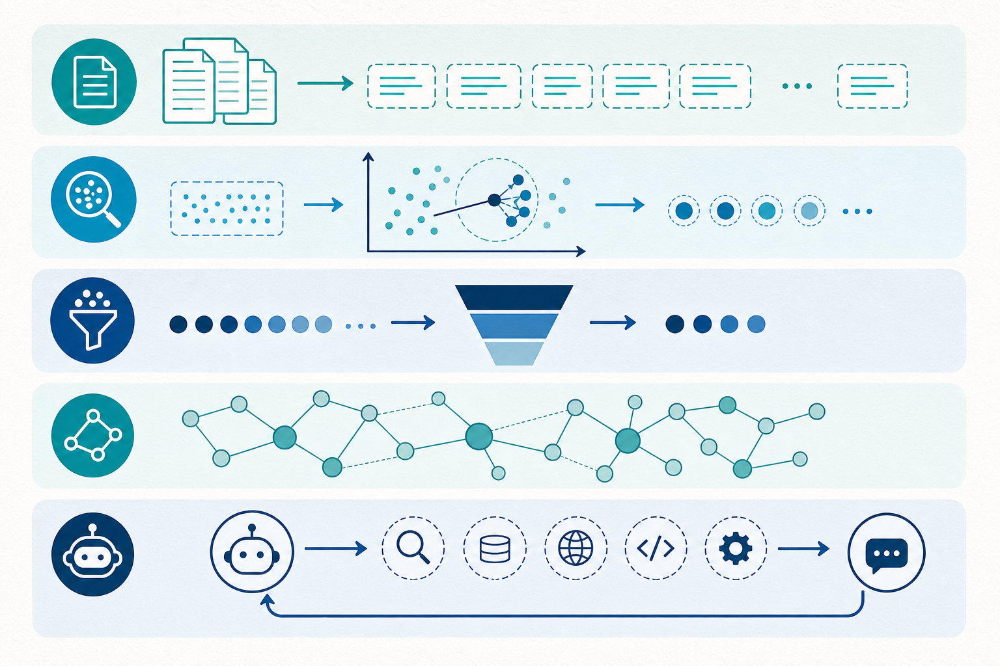

If your team is building AI that must answer from your data — policies, product docs, CRM history, case notes — you will eventually land on Retrieval-Augmented Generation (RAG).
RAG is simple in spirit: retrieve relevant context, then ask a model to generate an answer grounded in that context. In practice, “RAG” is not one architecture. It is a family of patterns — and choosing the wrong type is how demos die in production.
This guide walks through the main types of RAG, when each one earns its complexity, and how integration-minded solution engineers should think about them.
Why RAG exists
Large language models are powerful, but they do not magically know your enterprise truth. They can hallucinate, miss recent changes, and invent citations with confidence.
RAG reduces that gap by giving the model a shortlist of evidence before it speaks. Done well, it improves:
- Grounding — answers tied to source material
- Freshness — knowledge updates without full retraining
- Control — you decide what the model is allowed to see
- Auditability — you can show which chunks influenced the answer
Done poorly, RAG becomes an expensive search box that still fabricates answers.

1. Naive RAG (the starting point)
Naive RAG is the classic pipeline:
- Chunk documents
- Embed chunks into a vector store
- Retrieve top‑k similar chunks for a user question
- Stuff them into a prompt
- Generate an answer
It is fast to prototype and perfect for proving the idea. It struggles when questions require multi-hop reasoning, when chunks are poorly cut, or when “similar” text is not actually relevant.
Use it when: you need an internal FAQ, a docs assistant, or a proof of concept with a clean corpus.
Watch out for: noisy retrieval, duplicated context, weak citations, and brittle chunking.
2. Advanced RAG (where most enterprise teams should start)
Advanced RAG keeps the same backbone but improves quality at every stage:
- Better ingestion — document cleaning, metadata, hierarchy-aware chunking
- Query transformation — rewrite, expand, or decompose the user question
- Hybrid retrieval — vectors + keyword/BM25, not vectors alone
- Reranking — a second model sorts candidates by true relevance
- Compression — keep only the sentences that matter before generation
- Citation discipline — force answers to point back to sources
This is the pattern I recommend for most customer-facing copilots and knowledge assistants. You get measurable lift without jumping straight into multi-agent complexity.
Use it when: answer quality, trust, and evaluation matter more than demo speed.
3. Modular RAG (compose the pipeline like an integration flow)
Modular RAG treats retrieval and generation as swappable components: routers, retrievers, rerankers, memory modules, and response builders.
If you have lived in integration architecture, this will feel familiar. You are designing a composable flow with clear contracts between stages — not a single opaque black box.
Examples of modules:
- A router that sends “policy” questions to one index and “product” questions to another
- A metadata filter that scopes retrieval by region, product line, or ACL
- A verifier step that checks whether the draft answer is supported by retrieved evidence
Use it when: one corpus/one pipeline is not enough, and you need governance by domain.
4. Agentic RAG (retrieve as a tool, not a one-shot step)
Agentic RAG lets the model (or an orchestrator) decide when and how to retrieve. Instead of one retrieve → generate pass, the system can:
- Ask clarifying questions
- Search multiple stores
- Call APIs for live data
- Retry with a better query
- Invoke tools before answering
This is powerful for complex workflows — and dangerous if you skip evaluation, latency budgets, and permission boundaries.
Use it when: the task is multi-step (investigate → gather → decide → act), not a single Q&A.
Watch out for: runaway tool loops, higher cost, and weaker predictability.
5. GraphRAG (structure over similarity alone)
GraphRAG combines retrieval with a knowledge graph: entities, relationships, and communities of connected facts. Instead of only asking “which chunks look similar?”, you can ask “which entities and relationships answer this?”
It shines when the question depends on connections — ownership, dependencies, hierarchies, incident timelines — not just topical similarity.
Use it when: your domain is relationship-heavy (org structures, product hierarchies, regulatory maps, system landscapes).
Trade-off: graph construction and maintenance are real work. Do not adopt GraphRAG because it sounds advanced. Adopt it because similarity search keeps missing the relationships humans already know.
6. Related patterns you will hear in the wild
- Self-RAG / corrective RAG — the system critiques its own retrieval and regenerates when evidence is weak
- HyDE — generate a hypothetical answer first, then retrieve using that as the query
- Multimodal RAG — retrieve from PDFs, images, tables, and transcripts, not text alone
- Memory-augmented RAG — combine long-term user/session memory with document retrieval
These are usually enhancements layered onto Advanced or Modular RAG, not total replacements.
How to choose the right type of RAG
| If your goal is… | Start with… |
|---|---|
| Prove value quickly on clean docs | Naive RAG |
| Production Q&A with trust and citations | Advanced RAG |
| Multiple domains, policies, and access rules | Modular RAG |
| Multi-step investigation and tool use | Agentic RAG |
| Answers that depend on relationships | GraphRAG |
What solution engineers should pressure-test
Architecture slides are easy. Production is not. Before you recommend a RAG type in a deal or design review, ask:
- What is the source of truth? Docs, tickets, CRM, data lake, all of the above?
- Who is allowed to see what? Retrieval without authorization is a security incident waiting to happen.
- How will you measure quality? Groundedness, citation accuracy, latency, deflection rate.
- What happens when retrieval fails? Refuse, escalate to a human, or call a live API?
- How does knowledge stay fresh? Ingestion pipelines and ownership matter as much as the model.
This is why RAG is not only an AI topic. It is an integration and API topic: connectors, governance, identity, and operational ownership decide whether the assistant is useful or ornamental.
A practical adoption path
- Ship a Naive RAG prototype on one trusted corpus.
- Add hybrid search, reranking, metadata filters, and evaluation → Advanced RAG.
- Split by domain and permissions → Modular RAG.
- Only then introduce agents or graphs where the use case demands them.
Complexity should follow failure modes — not LinkedIn trends.
Final take
The question is no longer “Should we use RAG?” For enterprise knowledge work, the answer is usually yes. The better question is: which type of RAG matches the job, the data, and the risk?
Start simple. Measure relentlessly. Graduate to advanced, modular, agentic, or graph patterns only when the simpler system shows you exactly where it breaks.
That is how RAG moves from a demo to a durable capability.